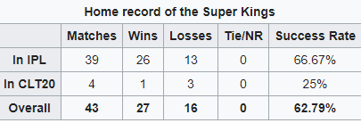
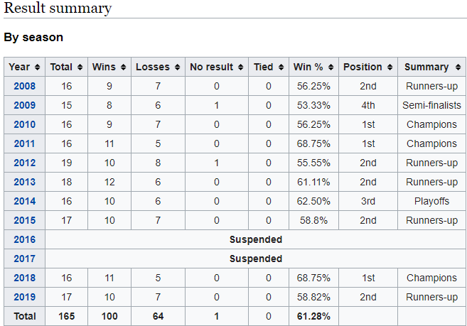

The team's theme song is the "Whistle Podu" designed by Aravind-Shankar (duo of Aravind Murali and Jaishankar Iyer).
Although the track was created only for YouTube in 2008, it gained popularity during the 2009 season and later became
the team's theme song.The video of the song represents the street dance form of dappangutthu which is very popular am
certain communities in Tamil Nadu. It is also a folk dance and music genre employed in Tamil cinema. The recordings of
some of the Super Kings players whistling were used in the music video.
HOME GROUND
CHEPAUK STADIUM
The home ground of the Super Kings is the historic M. A. Chidambaram Stadium ( called "The Chepauk") located in Chennai.
The stadium is named after former BCCI President M. A. Chidambaram. It is the oldest stadium in India which is in continuous
use.The stadium is owned by the Tamil Nadu Cricket Association and has a seating capacity of 50,000 as of May 2013.In 2010,
the stadium underwent a major renovation for hosting some of the matches of the 2011 ICC Cricket World Cup. The seating
capacity was increased from 36,000 to 50,000 and three new stands were established during this renovation.
The Super Kings have a 67.44% win record at this venue, which is often referred to as "Fortress Chepauk" and "Lions'den"
In the 2011 season, the Super Kings won all their home games (8 matches) including the finalagainst Royal Challengers
Bangalore. The Super Kings thus became the first team to win all their home games in a season and also the first team to
win the tournament at home.
In 2014, Chennai Super Kings played all their home matches at Ranchi due to issues with Government of Tamil Nadu.
In 2018, Chennai Super Kings managed to play a solitary home game against Kolkata Knight Riders due to members of
a few fringe political parties staging protests outside the stadium as well as several parts of Chennai demanding
the IPL matches to be moved out of the city until the Cauvery Management Board (CMB) was set up as directed by the
honourable Supreme Court of India. Despite tight security for the match against KKR, the Chennai police expressed
their inability in ensuring enough personnel at the venue for the smooth conduct of the remaining games.The remaining
six home matches of Chennai Super Kings were moved out of Chennai. Maharashtra Cricket Association Stadium in Pune
was selected to host the remaining six home matches of Chennai Super Kings.

For More Details Follows Us On
History
In September 2007, the Board of Control for Cricket in India (BCCI) announced the establishment of the Indian Premier League, a Twenty20 competition to be started in 2008.In January 2008, the BCCI unveiled the owners of eight city-based franchises. The Chennai franchise was sold to the India Cements for $91 million, making it the fourth most expensive team in the league behind Mumbai, Bangalore and Hyderabad. India Cements acquired the rights to the franchise for 10 years. Former ICC Chairman N. Srinivasan was the de facto owner of the Chennai Super Kings, by means of his position as the vice-chairman and managing director of India Cements Ltd. The franchisee was transferred to a separate entity named Chennai Super Kings Cricket Ltd., after the Supreme Court of India struck down the controversial amendment to the BCCI constitution's clause 6.2.4 that allowed board officials to have a commercial interest in the IPL and the Champions League T20 on 22 January 2015.
Key Players
Mahendra Singh Dhoni, who was the captain of the Indian limited-overs team in 2008, was bought by the Super Kings for $1.5 million at the 2008 players' auction. He was the most expensive player in the IPL until 2009 when the Super Kings signed up English all-rounder Andrew Flintoff for $1.55 million. Dhoni is one of the most successful captains in the IPL, having led the Super Kings to eight finals of which the team has won three.
The vice-captain of the team from 2008 to 2015 was Suresh Raina. Raina holds multiple IPL records such as most caps, most runs and most catches.Australian batsman Michael Hussey has the best batting average for the Super Kings. He was the first batsman from the Super Kings to score a century in the IPL. After Matthew Hayden's retirement in 2010, Hussey took over his place of opening batsman and was the team's leading run-scorer in 2011 and 2013 seasons. Murali Vijay, who played for the team from 2009 to 2013, is the first Indian batsman to score two centuries in the IPL. Super Kings' spinner Ravichandran Ashwin has the third best economy rate in IPL (6.53) and is the leading wicket-taker for the team.
Brand Value
MahendraChennai Super Kings was adjudged by Brand Finance to be the most valuable brand at US$65 million after the completion of 2018 IPL.[94] The Economic Times commissioned UK-based Brand Finance to carry out brand evaluation of the IPL and also each of the eight franchise teams (that was increased to 10 in 2011). Chennai Super Kings was rated as the "most valuable team" in the Indian Premier League in 2010–11, with a brand value of $100 million (approximately ₹ 2.24 billion).[95] In February 2013, London based Brand Finance evaluated the top 150 most valuable teams in the world, in which Chennai Super Kings is placed in the 147th place valued at $46 million just behind the Mumbai Indians.
Stastics
The Super Kings have lifted the IPL title thrice (in 2010, 2011 and 2018), and have the best win percentage among all teams in the IPL (61.28).[3] They hold the records of most appearances in the playoffs (ten) and the Final (eight) of the IPL. They are the only IPL team to qualify for the playoff stage in each edition of their appearance in the league. In addition, they have also won the Champions League Twenty20 in 2010 and 2014. The brand value of the Super Kings in 2019 is estimated to be around ₹732 crore (roughly $104 million), making them the second-most valuable IPL franchise, after Mumbai Indians /p>

For More Details Follows Us On
STAY TUNDED FOR FURTHER UPDATE
1.Mumbai Indians vs Chennai Super Kings
2.Sunrisers Hyderabad vs Mumbai Indians
3.Mumbai Indians vs Royal Challengers Bangalore
4.Kings XI Punjab vs Mumbai Indians
5.Kolkata Knight Riders vs Mumbai Indians
6.Mumbai Indians vs Rajasthan Royals
7.Mumbai Indians vs Kings XI Punjab
8.Chennai Super Kings vs Mumbai Indians
9.Mumbai Indians vs Kolkata Knight Riders
10.Mumbai Indians vs Delhi Capitals
11.Delhi Capitals vs Mumbai Indians
12.Mumbai Indians vs Sunrisers Hyderabad
13.Rajasthan Royals vs Mumbai Indians
14.Royal Challengers Bangalore vs Mumbai Indians
 CHEPAUK STADIUM
CHEPAUK STADIUM